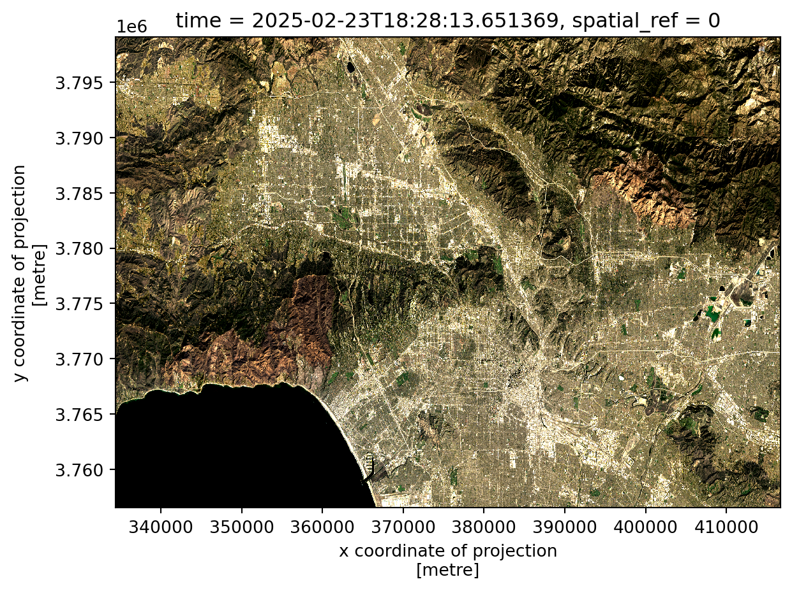
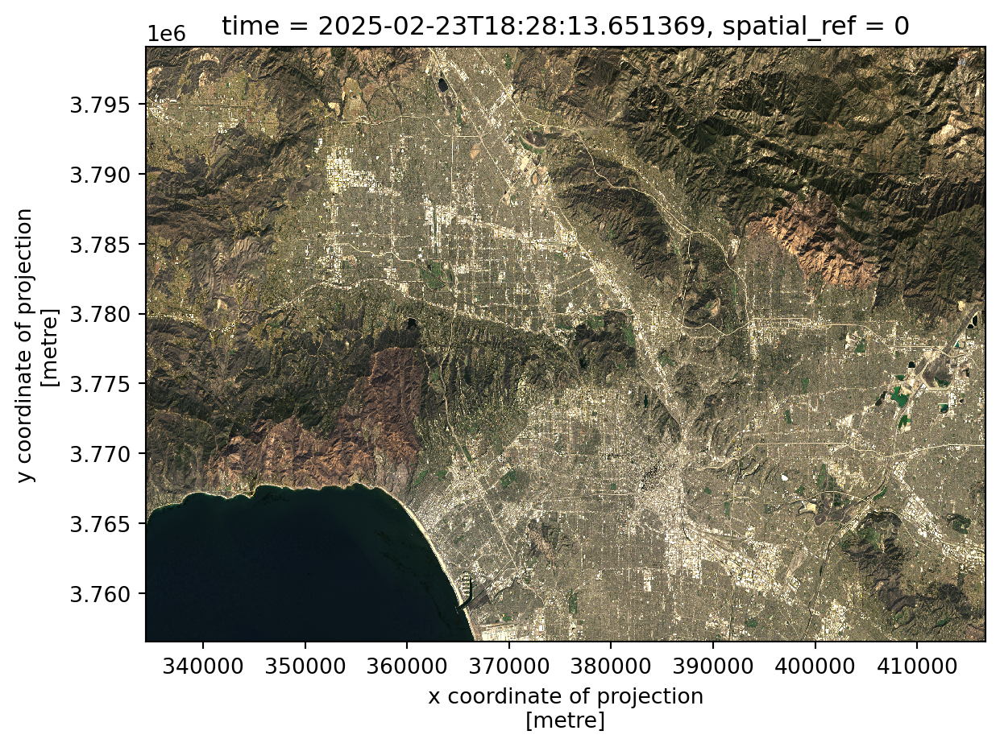
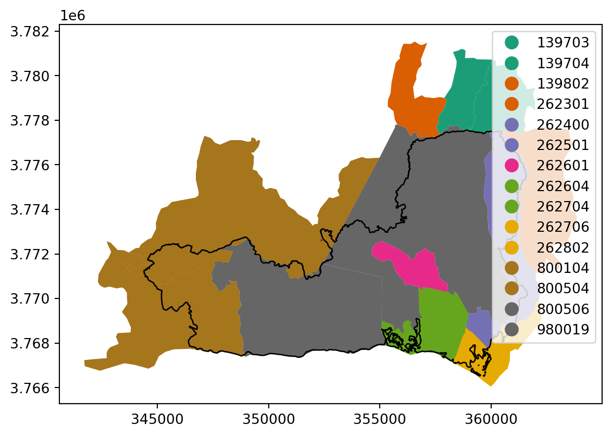
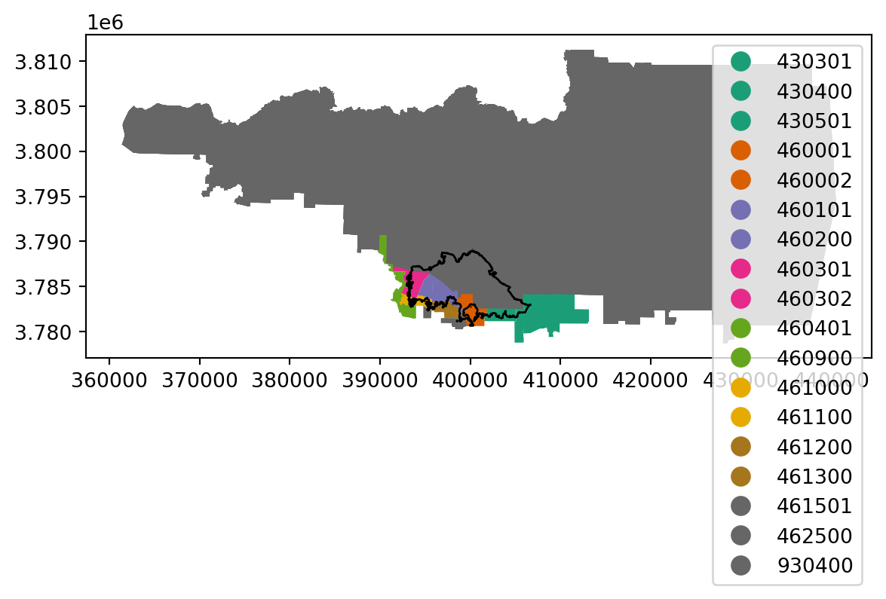
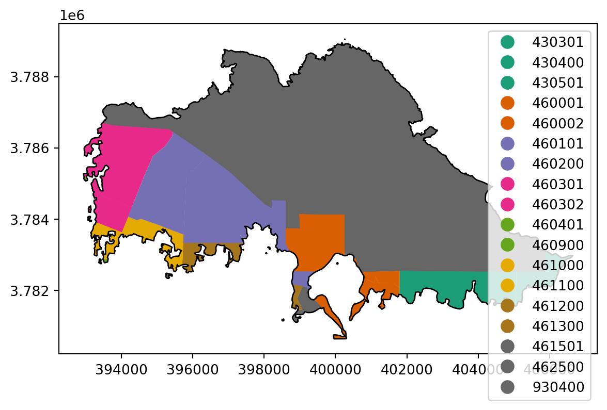
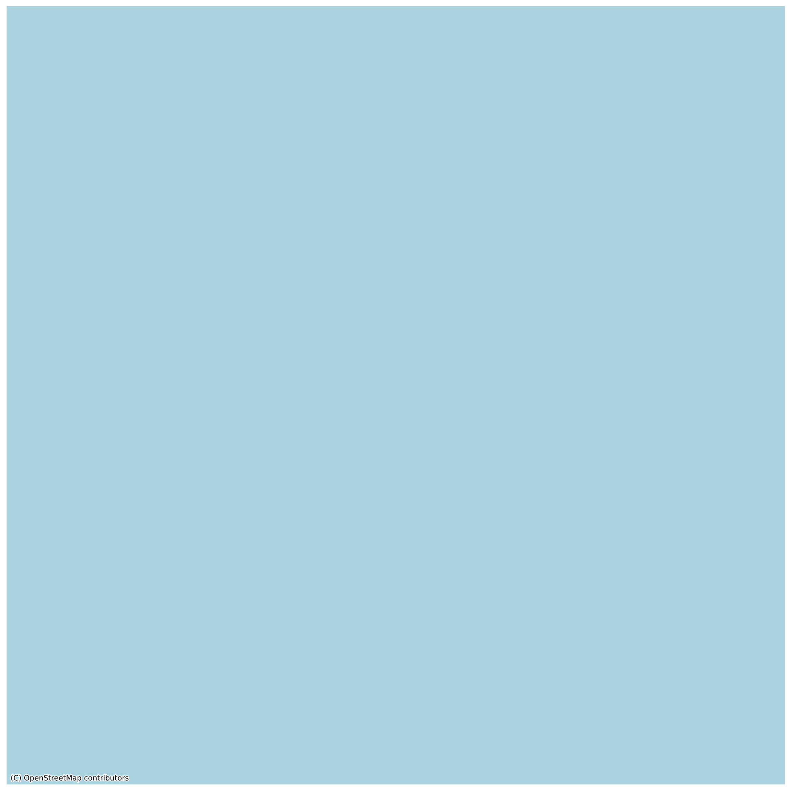

import pandas as pd
import numpy as np
import os
import geopandas as gpd
import xarray as xr
import matplotlib.pyplot as plt
import contextily as ctxAbout this Post
The Eaton and Palisades Fires reshaped large swaths of the Los Angeles foothills in early 2025. This post summarizes a remote-sensing workflow that converts Landsat 8 surface reflectance into both true- and false-color composites, overlays official fire perimeters, and links the impacted footprints to the EPA’s Environmental Justice Index (EJI) to highlight socially vulnerable neighborhoods caught within the burn scars.

Highlights
- Fire perimeter processing and Landsat feature engineering using
pandas,geopandas,numpy, andxarray. - CRS restoration and reprojection to align raster and vector assets for accurate overlays.
- True- and false-color visualization with
matplotlib, emphasizing burn severity via SWIR/NIR combinations. - Environmental Justice Index joins that compare poverty exposure inside each fire footprint.
Datasets and References
- Palisades & Eaton dissolved fire perimeters, Fire Integrated Real-time Intelligence System (FIRIS) via Los Angeles County NIFC ArcGIS Online (accessed 2025-12-22).
- Landsat 8 Collection 2 Level-2 surface reflectance (bands: red, green, blue, NIR, SWIR) via Microsoft Planetary Computer; clipped to the study area prior to download (accessed 2025-11-22).
- Environmental Justice Index 2024 California geodatabase (EPA).
Additional background references are listed in references.bib (NASA/USGS band guides and Landsat documentation).
Analysis Overview
Libraries and Data Ingest
We load the Python libraries used for tabular wrangling, geospatial analysis, and visualization.
Next we read the Eaton and Palisades perimeter shapefiles plus the clipped Landsat NetCDF scene.
fp = os.path.join('~/Desktop/MEDS/lucianbluescher.github.io/posts/220final_LAfires_AZbiodiversity_blog/data/Eaton_Perimeter_20250121/Eaton_Perimeter_20250121.shp')
eaton = gpd.read_file(fp)
fp = os.path.join('~/Desktop/MEDS/lucianbluescher.github.io/posts/220final_LAfires_AZbiodiversity_blog/data/Palisades_Perimeter_20250121/Palisades_Perimeter_20250121.shp')
palisades = gpd.read_file(fp)
landsat = xr.open_dataset("~/Desktop/MEDS/lucianbluescher.github.io/posts/220final_LAfires_AZbiodiversity_blog/data/landsat8-2025-02-23-palisades-eaton.nc", engine="netcdf4")Quick Data Checks
We verify CRS metadata and inspect the Landsat dimensions/variables so the next steps know what to expect.
# Fire perimeter data exploration
print(f"The CRS for the Eaton Perimeter is {eaton.crs}")
print(f"The CRS for the Palisades Perimeter is {palisades.crs}")
print(f"The Eaton Perimeter is projected: {eaton.crs.is_projected}")
print(f"The Palisades Perimeter is projected: {palisades.crs.is_projected}")
eaton.info()
palisades.info()The CRS for the Eaton Perimeter is EPSG:3857
The CRS for the Palisades Perimeter is EPSG:3857
The Eaton Perimeter is projected: True
The Palisades Perimeter is projected: True
<class 'geopandas.geodataframe.GeoDataFrame'>
RangeIndex: 20 entries, 0 to 19
Data columns (total 5 columns):
# Column Non-Null Count Dtype
--- ------ -------------- -----
0 OBJECTID 20 non-null int64
1 type 20 non-null object
2 Shape__Are 20 non-null float64
3 Shape__Len 20 non-null float64
4 geometry 20 non-null geometry
dtypes: float64(2), geometry(1), int64(1), object(1)
memory usage: 932.0+ bytes
<class 'geopandas.geodataframe.GeoDataFrame'>
RangeIndex: 21 entries, 0 to 20
Data columns (total 5 columns):
# Column Non-Null Count Dtype
--- ------ -------------- -----
0 OBJECTID 21 non-null int64
1 type 21 non-null object
2 Shape__Are 21 non-null float64
3 Shape__Len 21 non-null float64
4 geometry 21 non-null geometry
dtypes: float64(2), geometry(1), int64(1), object(1)
memory usage: 972.0+ bytes# Landsat Exploration
print(landsat.coords) # View coordinates
print(landsat.var) # View Variables
print(landsat.dims) # View DimensionsCoordinates:
* y (y) float64 11kB 3.799e+06 3.799e+06 ... 3.757e+06 3.757e+06
* x (x) float64 22kB 3.344e+05 3.344e+05 ... 4.166e+05 4.166e+05
time datetime64[ns] 8B ...
<bound method DatasetAggregations.var of <xarray.Dataset> Size: 78MB
Dimensions: (y: 1418, x: 2742)
Coordinates:
* y (y) float64 11kB 3.799e+06 3.799e+06 ... 3.757e+06 3.757e+06
* x (x) float64 22kB 3.344e+05 3.344e+05 ... 4.166e+05 4.166e+05
time datetime64[ns] 8B ...
Data variables:
red (y, x) float32 16MB ...
green (y, x) float32 16MB ...
blue (y, x) float32 16MB ...
nir08 (y, x) float32 16MB ...
swir22 (y, x) float32 16MB ...
spatial_ref int64 8B ...>
FrozenMappingWarningOnValuesAccess({'y': 1418, 'x': 2742})Both perimeters share a projected CRS and schema, while Landsat arrives as an array with georeferencing stored in spatial_ref.
Restoring Raster CRS Metadata
Because xarray sometimes drops CRS info, we explicitly write it back so raster/vector overlays align perfectly.
# Check landsat CRS
print(landsat.rio.crs)None# Print the CRS of landsat
print(landsat.spatial_ref.crs_wkt)
landsat_crs = landsat.spatial_ref.crs_wkt
#Recover the geospatial information by using rio.write_crs()
landsat = landsat.rio.write_crs(landsat_crs)
#Print the CRS of the updated dataset.#
print(landsat.rio.crs)PROJCS["WGS 84 / UTM zone 11N",GEOGCS["WGS 84",DATUM["WGS_1984",SPHEROID["WGS 84",6378137,298.257223563,AUTHORITY["EPSG","7030"]],AUTHORITY["EPSG","6326"]],PRIMEM["Greenwich",0,AUTHORITY["EPSG","8901"]],UNIT["degree",0.0174532925199433,AUTHORITY["EPSG","9122"]],AUTHORITY["EPSG","4326"]],PROJECTION["Transverse_Mercator"],PARAMETER["latitude_of_origin",0],PARAMETER["central_meridian",-117],PARAMETER["scale_factor",0.9996],PARAMETER["false_easting",500000],PARAMETER["false_northing",0],UNIT["metre",1,AUTHORITY["EPSG","9001"]],AXIS["Easting",EAST],AXIS["Northing",NORTH],AUTHORITY["EPSG","32611"]]
EPSG:32611True-Color Rendering
We start with a raw RGB composite to establish visual context, then clean nodata values for a clearer view.
# Select red, green and blue variables and plot as a numpy.array
landsat[["red", "green", "blue"]].to_array().plot.imshow(vmin = 7000, vmax = 15000)/opt/anaconda3/envs/eds220-env/lib/python3.11/site-packages/matplotlib/cm.py:478: RuntimeWarning: invalid value encountered in cast
xx = (xx * 255).astype(np.uint8)
# Adjust vmin and max and add robust parameter to get a true color image
landsat[["red", "green", "blue"]].to_array().plot.imshow(vmin = 8200, vmax = 13500, robust = True)/opt/anaconda3/envs/eds220-env/lib/python3.11/site-packages/matplotlib/cm.py:478: RuntimeWarning: invalid value encountered in cast
xx = (xx * 255).astype(np.uint8)
# Check for nan values in each column
for band in landsat.data_vars:
print(band, landsat[band].isnull().any().item())red False
green True
blue True
nir08 False
swir22 False# Identify which values are nan using
np.isnan(landsat)<xarray.Dataset> Size: 19MB
Dimensions: (y: 1418, x: 2742)
Coordinates:
* y (y) float64 11kB 3.799e+06 3.799e+06 ... 3.757e+06 3.757e+06
* x (x) float64 22kB 3.344e+05 3.344e+05 ... 4.166e+05 4.166e+05
time datetime64[ns] 8B 2025-02-23T18:28:13.651369
spatial_ref int64 8B 0
Data variables:
red (y, x) bool 4MB False False False False ... False False False
green (y, x) bool 4MB False False False False ... False False False
blue (y, x) bool 4MB False False False False ... False False False
nir08 (y, x) bool 4MB False False False False ... False False False
swir22 (y, x) bool 4MB False False False False ... False False False# Substitute nan values with 0
landsat = landsat.fillna(0)# Check for nan values in each column to ensure it worked
for band in landsat.data_vars:
print(band, landsat[band].isnull().any().item())red False
green False
blue False
nir08 False
swir22 False# Plot new true color image with cleaned array
landsat[["red", "green", "blue"]].to_array().plot.imshow(vmin = 7000, vmax = 15000)
The cleaned rendering highlights the burn scars more clearly and keeps the brightness range consistent.
False-Color Burn Severity Map
We switch to a SWIR–NIR–Red combination to emphasize burned ground versus intact vegetation, then overlay the fire perimeters.
# Plot false color image by plotting
landsat[["swir22", "nir08", "red"]].to_array().plot.imshow(vmin = 7000, vmax = 15000)
# Double check CRS of perimeter data
palisades = palisades.to_crs(landsat.rio.crs)
eaton = eaton.to_crs(landsat.rio.crs)
# Create the false color image from Landsat
fig, ax = plt.subplots(figsize=(10, 10))
landsat[["swir22", "nir08", "red"]].to_array().plot.imshow(
ax=ax,
vmin=7000,
vmax=15000
)
# Plot fire perimeter polygons on top of the image
palisades.boundary.plot(ax=ax, color="red", linewidth=1)
eaton.boundary.plot(ax=ax, color="red", linewidth=1)
# Set center points of each perimeter
p_center = palisades.geometry.centroid.iloc[0]
e_center = eaton.geometry.centroid.iloc[0]
# Add labels for each fire
ax.text(p_center.x, p_center.y, "Palisades Fire",
color="black", fontsize=10,
ha="left", va="center")
ax.text(e_center.x, e_center.y, "Eaton Fire",
color="black", fontsize=10,
ha="right", va="center")
# Add axis labels and title
ax.set_xlabel("X coordinate (meters)")
ax.set_ylabel("Y coordinate (meters)")
ax.set_title("Landsat false color image with Palisades & Eaton Fire Perimeters")
plt.show()
SWIR–NIR–red composites render burned areas in red hues and healthy vegetation in greens, so the perimeter overlays become immediately interpretable.
Environmental Justice Context
We now pull in the Environmental Justice Index (EJI) geodatabase, align CRS, and prepare tract-level subsets for each perimeter.
eji = gpd.read_file("~/Desktop/MEDS/lucianbluescher.github.io/posts/220final_LAfires_AZbiodiversity_blog/data/EJI_2024_California/EJI_2024_California.gdb")eji = eji.to_crs(palisades.crs)eji.crs<Projected CRS: EPSG:32611>
Name: WGS 84 / UTM zone 11N
Axis Info [cartesian]:
- [east]: Easting (metre)
- [north]: Northing (metre)
Area of Use:
- undefined
Coordinate Operation:
- name: UTM zone 11N
- method: Transverse Mercator
Datum: World Geodetic System 1984
- Ellipsoid: WGS 84
- Prime Meridian: Greenwichpalisades.crs<Projected CRS: EPSG:32611>
Name: WGS 84 / UTM zone 11N
Axis Info [cartesian]:
- [east]: Easting (metre)
- [north]: Northing (metre)
Area of Use:
- undefined
Coordinate Operation:
- name: UTM zone 11N
- method: Transverse Mercator
Datum: World Geodetic System 1984
- Ellipsoid: WGS 84
- Prime Meridian: Greenwichtype(eji)geopandas.geodataframe.GeoDataFrametype(palisades)geopandas.geodataframe.GeoDataFrameTract Selection and Visualization
Spatial joins isolate the tracts intersecting each fire perimeter. We plot them to confirm the selections before moving to poverty metrics.
eji_pali = gpd.sjoin(eji, palisades, predicate = 'intersects')fig, ax = plt.subplots()
eji_pali.plot(ax = ax,
column = 'TRACTCE',
cmap = 'Dark2',
legend = True)
palisades.plot(ax = ax,
color = 'none')
plt.show()
eji_eat = gpd.sjoin(eji, eaton, predicate = 'intersects')fig, ax = plt.subplots()
eji_eat.plot(ax = ax,
column = 'TRACTCE',
cmap = 'Dark2',
legend = True)
eaton.plot(ax = ax,
color = 'none')
plt.show()
palisades_clip = gpd.clip(eji_pali, palisades)
eaton_clip = gpd.clip(eji_eat, eaton)fig, ax = plt.subplots()
eaton_clip.plot(ax = ax,
column = 'TRACTCE',
cmap = 'Dark2',
legend = True)
eaton.plot(ax = ax,
color = 'none')
plt.show()
fig, ax = plt.subplots(1, 1, figsize=(14, 12))
# Add basemap using contextily
ctx.add_basemap(ax, source=ctx.providers.OpenStreetMap.Mapnik)
# ADD FIRE PERIMETERS: UPDATE FILL TRANSPARENCY AND COLOR
eaton.plot(ax = ax,
color = 'none')
# ADD LEGEND OR ANNOTATION TO IDENTIFY EACH FIRE
# ADD TITLE
ax.axis('off')
plt.tight_layout()
#plt.show()/opt/anaconda3/envs/eds220-env/lib/python3.11/site-packages/contextily/tile.py:645: UserWarning: The inferred zoom level of 27 is not valid for the current tile provider (valid zooms: 0 - 19).
warnings.warn(msg)
Finally we compare poverty exposure (E_POV200) for the tracts inside each perimeter using a shared legend range.
fig, (ax1, ax2) = plt.subplots(1, 2, figsize=(30, 10))
# UPDATE WITH YOU EJI VARIABLE FROM STEP 1
eji_variable = 'E_POV200' # percentage of persons with income below 200% of federal poverty level
census_within_palisades = palisades_clip
census_within_eaton = eaton_clip
# Find common min/max for legend range
vmin = min(census_within_palisades[eji_variable].min(), census_within_eaton[eji_variable].min())
vmax = max(census_within_palisades[eji_variable].max(), census_within_eaton[eji_variable].max())
# Plot census tracts within Palisades perimeter
census_within_palisades.plot(
column= eji_variable,
vmin=vmin, vmax=vmax,
legend=False,
ax=ax1,
)
ax1.set_title('Palisades Fire Area')
ax1.axis('off')
# Plot census tracts within Eaton perimeter
census_within_eaton.plot(
column=eji_variable,
vmin=vmin, vmax=vmax,
legend=False,
ax=ax2,
)
ax2.set_title('Eaton Fire Area')
ax2.axis('off')
# Add overall title
fig.suptitle('Palisades and Eaton fire comparison - Fire Areas Comparison')
# Add shared colorbar at the bottom
sm = plt.cm.ScalarMappable( norm=plt.Normalize(vmin=vmin, vmax=vmax))
cbar_ax = fig.add_axes([0.25, 0.08, 0.5, 0.02]) # [left, bottom, width, height]
cbar = fig.colorbar(sm, cax=cbar_ax, orientation='horizontal')
cbar.set_label('Percentage of Low income Persons')
plt.show()
These joins reveal that both fire scars overlap tracts with elevated poverty scores, underscoring the importance of tailoring recovery resources to vulnerable communities.
Final Visualizations and Takeaways
- True-color Landsat composite — baseline context for the Angeles National Forest canopy before highlighting change.
- False-color SWIR/NIR composite with perimeter overlays — pinpoints burn severity differences between Eaton and Palisades.
- EJI poverty comparison plots — show how each footprint intersects low-income census tracts, guiding equity-focused recovery planning.
After reviewing the visuals, the key takeaway is that burn severity and social vulnerability align across multiple tracts, implying that remote sensing plus equity data should inform targeted mitigation and aid deployment.